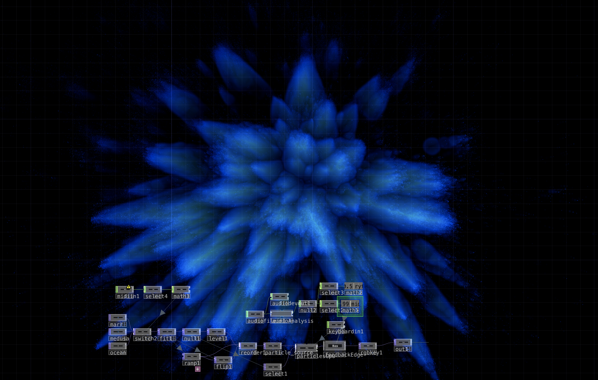
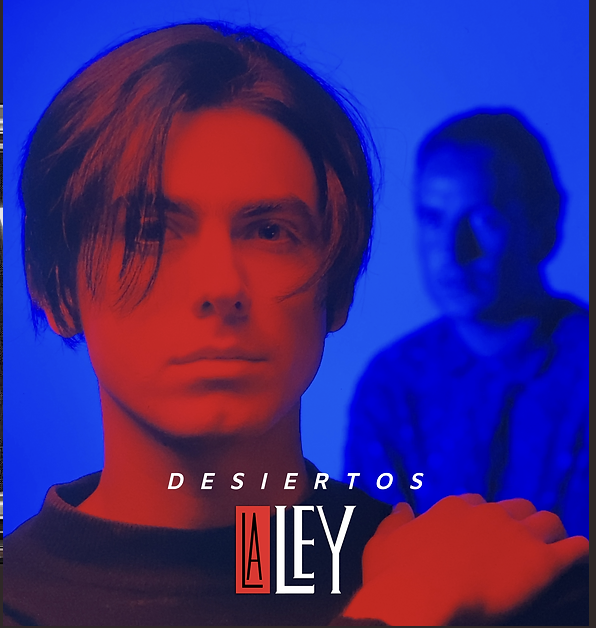
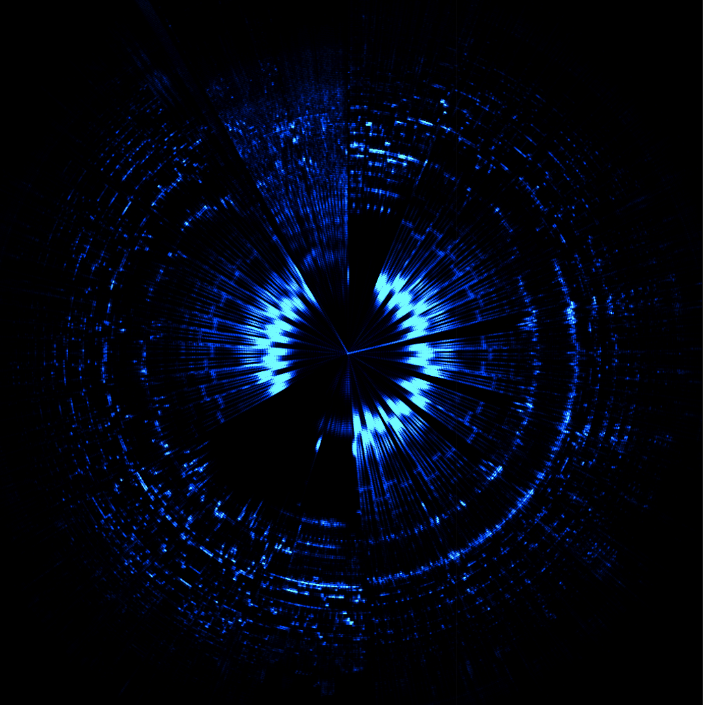

Espacio de exploración con TouchDesigner para visuales generativas, sistemas reactivos al audio y patches interactivos.


Con MediaPipe, interactivo inspirado en la portada del álbum de La Ley, Desiertos.
Se transformó una imagen en partículas para generar una imagen dinámica, modificada con feedbacks.

Los 03:17 min de audio del videoclip de My Blood by Pablo Chill-E y Polimá Westcoast en una imagen. Tutorial del funcionamiento base de @elekktronaut
Video del niño en la disco, reactivo a la canción Rakata de Wisin y Yandel.